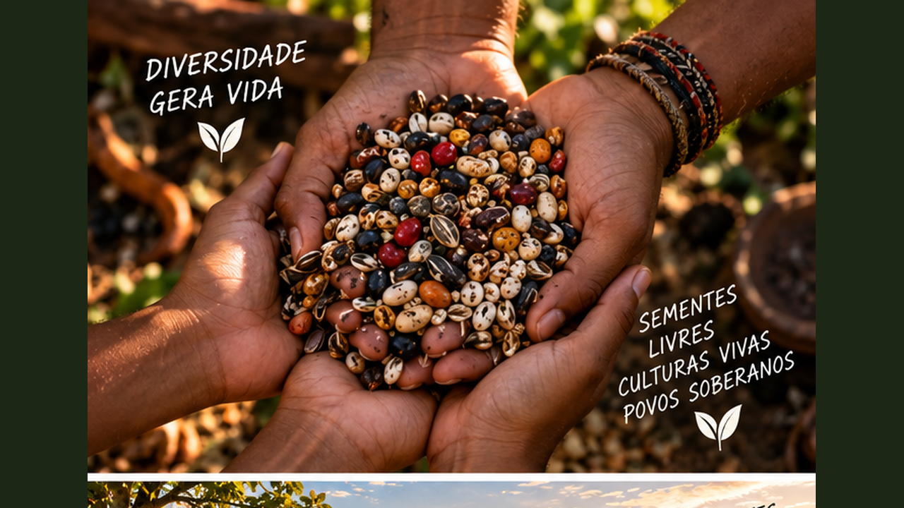
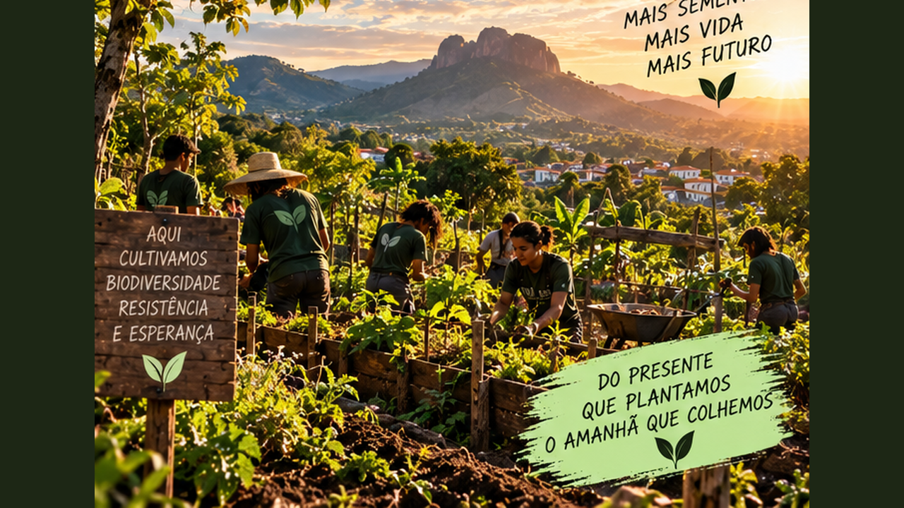

Biodiversidade, sementes e autonomia: da reprodução das plantas à conservação, redes comunitárias e economia da diversidade.
6 módulos24 aulasProjeto Sementes do Futuro
0 de 24 aulas concluídas
Pequenas sementes, grandes futuros
Este curso acompanha a jornada completa da semente: biologia, seleção, colheita, armazenamento, agrobiodiversidade, redes comunitárias e modelos capazes de manter diversidade viva no território.

01
Sementes são memória e futuro
Compreenda a semente como tecnologia biológica, patrimônio genético e ponto de partida da autonomia produtiva.
Aula 01
O que existe dentro de uma semente
Uma semente reúne embrião, reservas e estruturas de proteção capazes de manter uma nova planta em espera até encontrar condições adequadas. Água, temperatura, oxigênio e, em algumas espécies, luz participam do processo de germinação. Essa pequena estrutura concentra uma estratégia evolutiva extraordinária.
Para quem cultiva, compreender sementes significa aprender a observar qualidade, vigor e adaptação. Uma semente não é apenas um insumo comprado antes do plantio: ela conecta uma geração de plantas à seguinte e carrega características selecionadas ao longo do tempo.
Atividade prática
Abra cuidadosamente sementes grandes de espécies diferentes e identifique estruturas visíveis; registre sem destruir materiais raros ou destinados à conservação.
Aula 02
Diversidade genética é segurança
Uma população com diversidade genética possui indivíduos com características diferentes. Essa variabilidade pode aumentar as possibilidades de resposta a mudanças de clima, pragas e condições locais. Sistemas extremamente uniformes podem ser eficientes em determinadas condições, mas também concentram riscos.
Preservar diversidade não significa rejeitar melhoramento ou tecnologia. Significa reconhecer que diferentes materiais genéticos têm valor e que conservar opções amplia a capacidade de adaptação futura.
Atividade prática
Liste cinco características que poderiam variar dentro de uma mesma cultura: ciclo, cor, sabor, resistência, porte ou outras.
Aula 03
Variedades locais e conhecimento acumulado
Variedades mantidas por agricultores e comunidades podem refletir muitos ciclos de seleção em condições específicas. Sabor, adaptação, época de plantio e uso culinário fazem parte desse patrimônio. O conhecimento associado à semente é tão importante quanto o material físico.
Registrar nomes locais, histórias, formas de cultivo e origem ajuda a evitar que esse conhecimento desapareça. A conservação é biológica e cultural.
Atividade prática
Converse, quando possível, com alguém que cultiva e registre a história de uma variedade conhecida na região.
Aula 04
Autonomia começa com conhecimento
Guardar sementes pode reduzir dependência em alguns sistemas, mas exige saber quais espécies permitem reprodução fiel, como evitar cruzamentos indesejados e como armazenar corretamente. Nem toda semente comercial foi desenvolvida para ser reproduzida mantendo as mesmas características.
Autonomia responsável nasce de informação. Antes de multiplicar qualquer material, identifique espécie, variedade, origem e características de reprodução.
Atividade prática
Crie uma ficha de identificação com nome, origem, ano, características e observações de cultivo.
Ferramenta do módulo — atualize seu Caderno de Sementes com fichas, inventário, testes e decisões.
02
Da flor à próxima geração
Aprenda polinização, seleção, colheita e beneficiamento de sementes.
Aula 05
Como as plantas se reproduzem
Plantas possuem diferentes sistemas reprodutivos. Algumas tendem à autopolinização; outras dependem mais de cruzamento entre indivíduos e de agentes como insetos ou vento. Isso influencia a forma de produzir sementes mantendo características desejadas.
Distâncias, épocas de floração e barreiras podem ser usadas em certos cultivos para reduzir cruzamentos. As necessidades variam por espécie, portanto guias técnicos específicos são importantes.
Atividade prática
Escolha três culturas e pesquise depois se são predominantemente autógamas ou alógamas.
Aula 06
Selecionar sem empobrecer
Escolher sementes apenas de uma única planta excepcional pode reduzir diversidade ao longo de gerações. Em variedades de polinização aberta, manter número adequado de plantas-mãe ajuda a conservar uma base genética mais ampla.
A seleção deve seguir objetivos claros: saúde, adaptação, qualidade ou produtividade. Registrar critérios evita selecionar apenas pelo tamanho ou aparência.
Atividade prática
Defina quatro critérios de seleção para uma cultura e explique por que cada um importa.
Aula 07
Colheita no ponto certo
Sementes precisam atingir maturidade fisiológica antes do armazenamento. Em frutos secos, isso frequentemente coincide com secagem da estrutura; em frutos carnosos, sementes podem ser retiradas de frutos maduros. O ponto correto varia entre espécies.
Colher cedo demais pode reduzir germinação; esperar demais pode aumentar perdas por chuva, animais ou dispersão. Aprender sinais específicos é parte do ofício.
Atividade prática
Escolha duas espécies e descreva quais sinais indicariam maturidade para sementes.
Aula 08
Limpeza e secagem
Restos vegetais, polpa e umidade excessiva dificultam armazenamento. Depois da colheita, sementes precisam ser beneficiadas conforme a espécie e secas em condições que preservem sua viabilidade.
Calor excessivo pode danificar o embrião. O objetivo é reduzir umidade de maneira controlada e armazenar somente material limpo e saudável.
Ferramenta do módulo — atualize seu Caderno de Sementes com fichas, inventário, testes e decisões.
03
Guardar sementes com qualidade
Construa um sistema simples de organização, teste e conservação.
Aula 09
Umidade, temperatura e tempo
Em muitas sementes chamadas ortodoxas, menor umidade e temperaturas adequadas prolongam conservação. Outras espécies possuem comportamento diferente e não toleram dessecação intensa. Por isso, não existe uma única regra para todas.
Para uma coleção doméstica ou comunitária, o primeiro passo é conhecer a espécie, evitar calor e umidade excessivos e registrar datas. Materiais valiosos podem exigir protocolos especializados.
Atividade prática
Escolha cinco sementes da sua realidade e pesquise depois suas necessidades de armazenamento.
Aula 10
Embalagem e identificação
Um pote bonito sem informação vira mistério em poucos meses. Toda amostra precisa de nome, variedade quando conhecida, origem, data de colheita e outras informações úteis. A embalagem deve ser compatível com o nível de secagem e o ambiente.
Organização evita misturas e permite comparar lotes. Um código simples pode ligar cada embalagem a uma ficha mais detalhada.
Atividade prática
Crie um modelo de etiqueta com no máximo sete campos essenciais.
Aula 11
Teste de germinação
Um teste simples permite estimar quantas sementes ainda conseguem germinar. Uma amostra é colocada em condições adequadas e o número de plântulas normais é registrado. O resultado orienta quantidade de sementes no plantio e necessidade de renovar o lote.
Testes caseiros são educativos e úteis para manejo, embora análises oficiais de qualidade sigam normas próprias.
Atividade prática
Simule: em 50 sementes, 42 germinaram normalmente. Calcule a porcentagem e registre o resultado.
Aula 12
Inventário do banco
Um banco de sementes precisa saber o que possui, quanto possui e quando cada lote deve ser renovado. Planilhas ou fichas físicas podem registrar entrada, saída, germinação e multiplicações.
Sem inventário, materiais podem vencer esquecidos. Gestão é parte da conservação.
Atividade prática
Crie colunas para código, espécie, variedade, origem, data, quantidade, germinação e próxima multiplicação.
Ferramenta do módulo — atualize seu Caderno de Sementes com fichas, inventário, testes e decisões.
04
Biodiversidade no território
Conecte sementes, alimentação, cultura e ecossistemas.
Aula 13
Agrobiodiversidade
Agrobiodiversidade inclui variedades cultivadas, espécies alimentares, animais, microrganismos e conhecimentos associados aos sistemas agrícolas. Ela foi construída por interação entre natureza e sociedades humanas.
Uma alimentação baseada em poucas espécies esconde a enorme diversidade possível. Mapear o que ainda é cultivado localmente é uma forma de reconhecer patrimônio.
Atividade prática
Liste alimentos produzidos na região e marque quais possuem variedades locais conhecidas.
Aula 14
Sementes e cultura alimentar
Receitas tradicionais dependem de ingredientes específicos. Quando uma variedade desaparece, sabores, técnicas culinárias e histórias também podem se perder. Conservar sementes pode ajudar a conservar identidades alimentares.
Cozinheiras, agricultores, feirantes e famílias guardam conhecimentos complementares. Projetos de sementes ficam mais fortes quando conectam campo e cozinha.
Atividade prática
Escolha um prato tradicional e investigue quais variedades ou ingredientes locais estão ligados a ele.
Aula 15
Polinizadores e diversidade
Muitas plantas cultivadas dependem ou se beneficiam de polinizadores. Flores ao longo do ano, habitat e menor exposição a substâncias nocivas ajudam a sustentar essas populações.
Conservar sementes sem cuidar do ambiente que permite reprodução das plantas seria incompleto. A biodiversidade precisa de paisagem funcional.
Atividade prática
Desenhe uma borda de cultivo com plantas floríferas em diferentes épocas do ano.
Aula 16
Mapa da diversidade local
Feiras, quintais, roças, comunidades, hortas e viveiros podem funcionar como pontos de conservação. Um mapa mostra onde o conhecimento e os materiais ainda circulam.
O objetivo não é divulgar localização de coleções sensíveis sem consentimento. Registre apenas informações autorizadas e úteis para articulação comunitária.
Atividade prática
Crie um mapa hipotético com cinco pontos de diversidade e o que cada um conserva.
Ferramenta do módulo — atualize seu Caderno de Sementes com fichas, inventário, testes e decisões.
05
Troca, comunidade e responsabilidade
Aprenda a organizar redes de sementes com informação, confiança e respeito.
Aula 17
Feiras de troca
Feiras aproximam guardiões, agricultores e consumidores e permitem circulação de materiais e histórias. Para funcionar bem, sementes precisam estar identificadas e participantes devem informar origem e características conhecidas.
Troca responsável evita promessas de pureza ou desempenho que não possam ser comprovadas. Transparência fortalece a rede.
Atividade prática
Crie uma ficha curta para acompanhar cada lote em uma feira.
Aula 18
Casa ou banco comunitário de sementes
Uma casa de sementes pode receber, organizar, conservar e redistribuir materiais conforme regras definidas pela comunidade. Ela precisa de responsáveis, inventário, critérios de entrada e plano de multiplicação.
O espaço físico é apenas parte do projeto. Governança decide quem acessa, como devolve, como informações são registradas e como conflitos são resolvidos.
Atividade prática
Escreva cinco regras básicas para uma casa comunitária de sementes.
Aula 19
Conhecimento e consentimento
Informações tradicionais e materiais biológicos possuem dimensões éticas e, em alguns contextos, jurídicas. Registrar ou divulgar conhecimento de comunidades exige respeito, consentimento e atenção às regras aplicáveis.
Projetos educativos devem evitar apropriar histórias ou materiais como se fossem livres de contexto. Reconhecer origem e autoria coletiva faz parte de uma relação justa.
Atividade prática
Escreva um pequeno protocolo de consentimento para registrar uma história sobre sementes.
Aula 20
Regras também fazem parte
Produção, comercialização, intercâmbio e conservação de sementes podem estar sujeitos a normas diferentes conforme finalidade, espécie e contexto. O curso não substitui orientação jurídica ou técnica específica.
Antes de transformar uma rede comunitária em atividade comercial, consulte fontes oficiais e assistência adequada. Autonomia sustentável inclui conhecer direitos e responsabilidades.
Atividade prática
Liste quais perguntas legais você precisaria responder antes de vender sementes.
Ferramenta do módulo — atualize seu Caderno de Sementes com fichas, inventário, testes e decisões.
06
Sementes e economia local
Transforme diversidade em valor sem reduzir patrimônio a mercadoria.
Aula 21
Valor não é apenas preço
Uma semente pode ter valor produtivo, cultural, genético e alimentar. O preço de um pacote não mede adaptação acumulada, conhecimento associado ou importância para segurança alimentar.
Projetos econômicos responsáveis reconhecem essas dimensões e evitam explorar recursos comunitários sem benefício compartilhado.
Atividade prática
Escolha uma variedade e descreva quatro tipos diferentes de valor que ela pode possuir.
Aula 22
Custos de conservar
Coletar, limpar, testar, embalar, registrar e multiplicar exige tempo e recursos. Mesmo um banco comunitário gratuito possui custos operacionais. Torná-los visíveis ajuda a planejar continuidade.
Voluntariado pode contribuir, mas não deve esconder trabalho necessário. Um orçamento transparente mostra o que precisa ser financiado.
Atividade prática
Monte categorias de custo para conservar 20 variedades durante um ano.
Aula 23
Produtos e serviços possíveis
Viveiros, oficinas, educação ambiental, produção de mudas, visitas pedagógicas e alimentos da agrobiodiversidade podem gerar renda em projetos adequadamente estruturados. Cada atividade possui exigências próprias.
O melhor modelo começa pela missão do projeto e pelo que a equipe consegue entregar com qualidade. Diversificar receita pode aumentar resiliência financeira.
Atividade prática
Imagine três fontes de receita que não dependam exclusivamente da venda de sementes.
Aula 24
Rede econômica do território
Agricultores, cozinhas, restaurantes, escolas, feiras e consumidores podem criar demanda para produtos diversos. Quando uma variedade volta ao prato, aumenta o incentivo para continuar cultivando-a.
Conservação pode se fortalecer quando produção e consumo se reconectam. O desafio é criar mercado sem uniformizar aquilo que se pretende preservar.
Atividade prática
Desenhe uma cadeia ligando guardião → produtor → cozinha → consumidor → retorno para conservação.
Ferramenta do módulo — atualize seu Caderno de Sementes com fichas, inventário, testes e decisões.

Projeto final — Sementes do Futuro: Plano de 12 Meses
Estruture uma pequena iniciativa de conservação, multiplicação e circulação responsável de sementes.